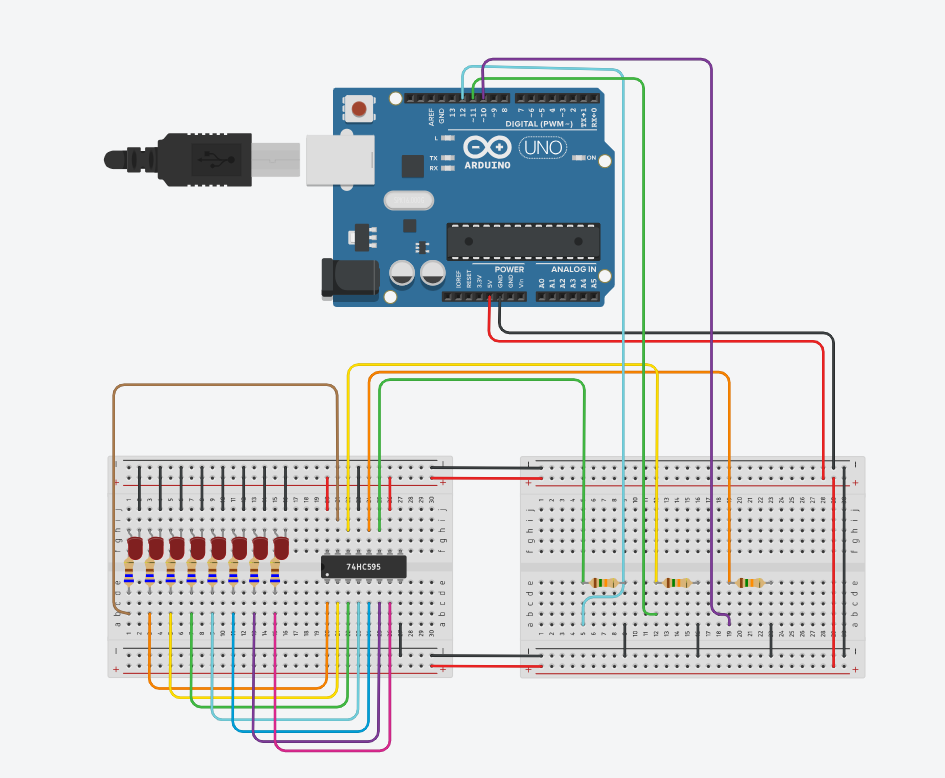

LED Pattern Control Using Shift Register

Used Arduino and a 74LS595 shift register to control LED patterns with three pins.
Project Overview:
This project involves using shift registers (74LS595) with an Arduino to control the light patterns of eight LEDs. By utilizing only three pins on the Arduino, we could drive the eight LEDs, showcasing an efficient method for expanding digital outputs.
Key Components:
- Arduino microcontroller
- 74LS595 shift registers
- Eight LEDs
- Resistors
- Breadboard and jumper wires
Key Features:
- Efficient use of Arduino pins (only three required)
- Dynamic control of multiple LED patterns
- Practical implementation of shift registers
Arduino Code
Tinkercad Schematic

const int OUT_REG_PIN = 10;
const int SHIFT_REG_PIN = 12;
const int INPUT_PIN = 11;
int counter = 0;
void setup()
{
pinMode(OUT_REG_PIN, OUTPUT);
pinMode(SHIFT_REG_PIN, OUTPUT);
pinMode(INPUT_PIN, OUTPUT);
digitalWrite(INPUT_PIN, HIGH);
}
void loop()
{
counter++;
/*
if(counter == 7 ){
digitalWrite(INPUT_PIN, !digitalRead(INPUT_PIN));
counter = 0;
}
digitalWrite(SHIFT_REG_PIN, HIGH);
digitalWrite(SHIFT_REG_PIN, LOW);
digitalWrite(OUT_REG_PIN, HIGH);
digitalWrite(OUT_REG_PIN, LOW);
digitalWrite(INPUT_PIN, !digitalRead(INPUT_PIN));
delay(500);
}